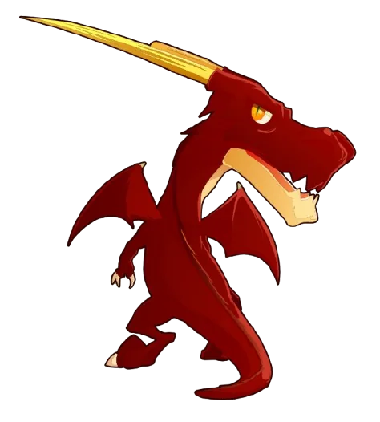

Connexion
Inscription
Profil
Dragoune Noir principale
+ Profil
Renommer
Supprimer
+ Run
-
Donjon actif

Sanctuaire
Suivi
Stats
Historique
Données
Modifier
Annuler
Danger
Reset profil
Sanctuaire des Dragoeufs
Actif
Effectués
0
Restants
12
Temps estimé restant
≈ 6h 00min
Sagesse
0
/ 55 sagesse
Prochaine sagesse
Sanctuaire 1 donjon
Estimation basée sur vos compteurs actuels.
+1 sagesse
Projection